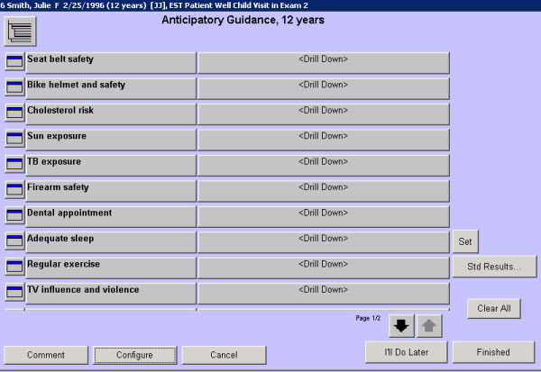

|
Description
This screen is used to document the patient safety and health topics that were discussed with the parent/guardian. The topics are age-based, that is they change based on the age of the patient.
Most Anticipatory Guidance screens use the Yes/No format. This allows the user to use the Select All buttons to quickly select all answers in a column. There is a Comment bar that allows for any additional information on a topic by topic basis as needed.
How to Access This Screen
Access this screen by:
- Selecting the Add History button on the Patient Chart, then selecting Anticipatory Guidance
- Selecting the small icon to the left of Anticipatory Guidance on the Patient Chart
- Selecting the description Anticipatory Guidance on the Patient Chart, then selecting the description again on the dashboard
Screen Example

Want to Learn More?
Related Solutions
Concept: Anticipatory Guidance
Concept: Yes/No Format
How to: Document Anticipatory Guidance
|